Example Workflow
On this page we show you an Example Workflow of BEHDS based on fictional questionnaires and data. This Example is also included in the download.
Initial Setup
Download BEHDS from here.
After downloading and extracting BEHDS, you should have the following folder structure:
BEHDS 1.0.0/code/projectdata/rawdata/resources/templates/behds.R
Step 1: Preparing Project Data
First, create a project folder within the projectdata/ directory and name it according to your project. For this guide, we will name the project folder Example.
Next, copy template.xlsx, template_info.xlsx and template_id.xlsx (optional) from the templates/ folder into your project folder. Rename these files to Example.xlsx, Example_info.xlsx and Example_id.xlsx, respectively.
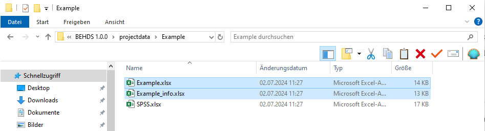 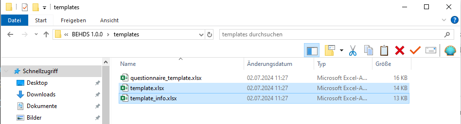
Once the files are renamed, open all of them in Excel. You will need to input data specific to your project.
In this example, the project uses the questionnaires “Silly” and “SPSS.” Additionally, demographic data, such as age, sex, handshakes, socks, dance, superpower, and group, were collected outside the questionnaires. Be sure to carefully read the headers in the template and fill in the information accordingly.
For example:
Define units such as “Years” for “Age.”
Specify open-ended questions and scales when necessary.
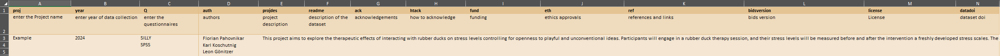
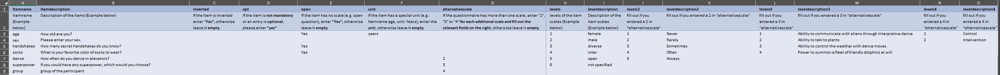
Step 2: Organizing Raw Data
Next, create a folder named Example inside the rawdata/ directory. In this folder, you will store your raw data files. It’s best to maintain a consistent naming convention for easier management.
In this example, we have four files. The naming conventions are flexible, but consistency helps avoid errors. The files will include demographic data and information from multiple sessions.
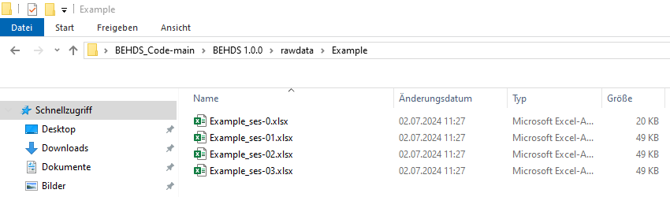
For our example, we did a prescreening, where we assessed demographic data. We changed the first row to id and put in the id of the participants. The second row is called ses and we put in the session. Since we did a prescreening, we give it 0.
Example_ses-0.xlsxfor demographic data.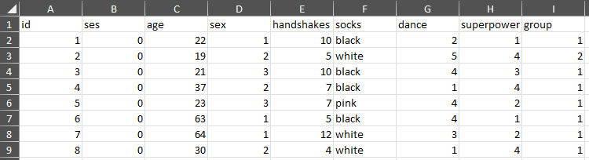
Rawdata_Example_ses0
We also have the data of three online surveys for each of the three sessions. Therefore we put in the ses column the number of the session.
Example_ses-1.xlsxfor session 1 data.
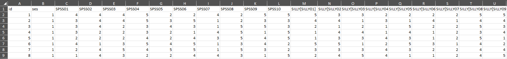
Note: You can create multiple files containing all your data; it does not all have to be in one file. Ensure the “id” and “ses” columns are correct in each file.
Step 3: Structuring Raw Data Files
Each raw data file needs to follow a specific structure. Here’s how to format the columns:
- ID Column: The first column should be named “id.” It should contain the participant ID, which must remain consistent across all files to ensure proper data merging.
- Session Column: The second column should be named “ses.” This indicates the session or measurement time point (e.g., 1, 2, 3). If there’s only one session, enter “1.”
Ensure that you fill out each column correctly, as errors in this step can lead to issues later during data analysis.
Step 4: Using Pre-existing Questionnaires
Now, check the resources/ folder to see if your questionnaire already exists. If it does not, create a new questionnaire file.
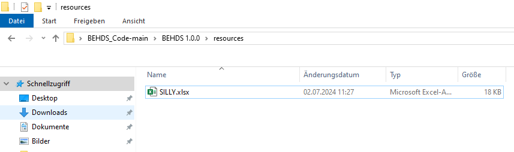
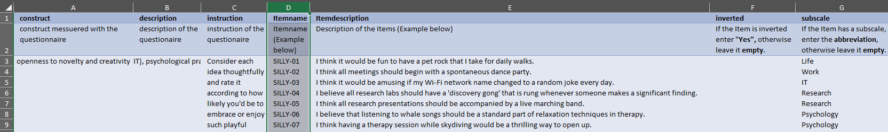
Step 5: Creating a New Questionnaire
If your questionnaire does not exist (e.g., “SPSS”), you will need to create one:
- Copy
questionnaire_template.xlsxfrom thetemplates/folder into yourprojectdata/folder. - Rename it to match your questionnaire, such as
SPSS.xlsx. - Open the file and fill in the required information based on the questionnaire. Follow the column headers’ instructions carefully.
If done correctly, your file should look similar to this:
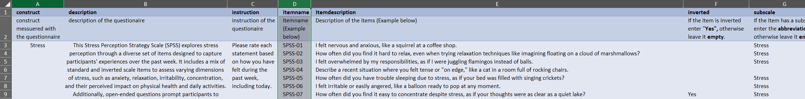
Final Data Structure
Once all the files are created and filled out, your data structure should look like this:
projectdata/Example/Example.xlsxExample_info.xlsxSPSS.xlsx
rawdata/Example/Example_ses-0.xlsxExample_ses-1.xlsxExample_ses-2.xlsx- …
resources/SPSS.xlsx- …
Step 6: Running BEHDS.R
Now, you’re ready to run the program.
- Open
behds.Rin RStudio. The file is located in the root folder,BEHDS 1.0.0. - On the second line of the script, enter your project name:
proj = "Example"
- Press the
Sourcebutton in the upper-right corner of the RStudio code window. - Wait for the process to complete. This may take some time.
- Once finished, you will find the BIDS-compliant structure in
bids/Example/rawdata. - The feedback file
Example.htmlwill be available inbids/Example/derivativesalongside the completed.csvfiles.
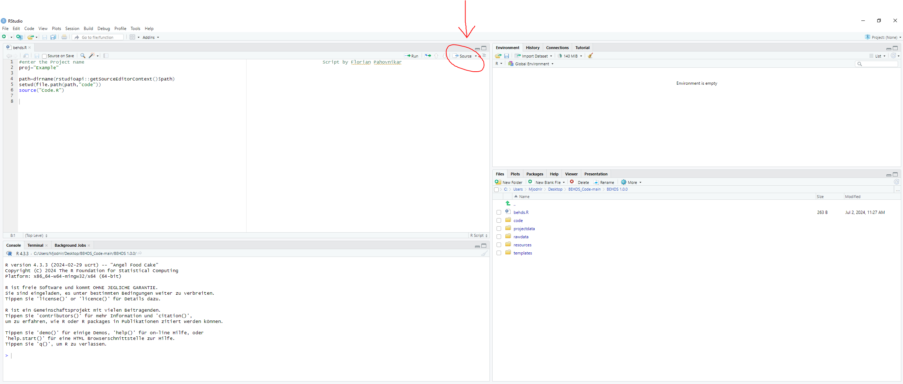